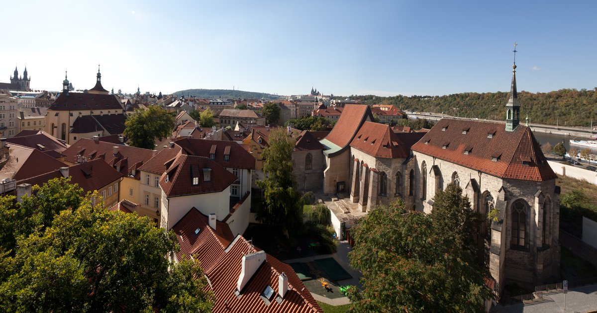

17. 10. 2024, 19:30
Josef Špacek | violino
Tomáš Jamník | violoncello
Galleria Nazionale di Praga — Convento di Sant'Agnese di Boemia
Indirizzo
Anežská 12, 110 00, Staré Město, Praga 1

Il leitmotiv dello straordinario album del violinista Josef Špaček e del violoncellista Tomáš Jamník è la parola: viaggi. I due artisti eccezionali presenteranno i loro diversi percorsi musicali in un concerto con opere di Leoš Janáček, Arthur Honegger e Bohuslav Martinů. Autori i cui percorsi di vita sono stati intricati e spesso difficili. Nonostante questo, o forse proprio per questo, sono stati in grado di comporre bellissimi dialoghi strumentali intrisi di ottimismo e speranza. La loro testimonianza emotiva è un promemoria del potente ruolo che la musica può svolgere nelle nostre vite. All'inizio del concerto ci sarà una breve lezione sul dipinto di Toyen: At a castle La Coste. La lezione è solo in ceco.
Organizzatore
Orchestra Sinfonica di Praga
Sito Web
www.fok.cz/it